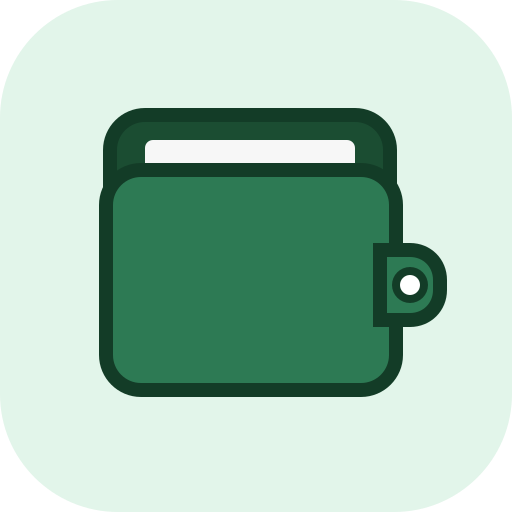

アプリについて

あといくら
使った日と、減る日をひと目で管理
「あといくら」は、買い物をした日（利用）と銀行口座から実際にお金が減る日（引き落とし）を分けて直感的に管理できる支出管理アプリです。
よくある質問（FAQ）
登録したデータはどこに保存されますか？
すべてお使いのスマートフォンやPCのブラウザ内（localStorage）にのみ保存されます。開発者や外部のサーバーへ送信・保存されることは一切ありません。
機種変更時にデータを移行できますか？
はい、簡単に移行できます。旧端末の設定メニュー「バックアップ」から「JSONで書き出す」をタップしてファイルを保存し、新しい端末で「JSONから読み込む」を実行してください。
データが消えた場合は復元できますか？
事前に書き出したJSONバックアップファイルがあれば、いつでも元の状態に復元できます。ブラウザのキャッシュ消去や端末の故障に備えて、定期的にバックアップファイルをiCloud DriveやGoogle ドライブ等に保存しておくことをおすすめします。
カード番号や口座番号を登録する必要はありますか？
いいえ、一切必要ありません。カード番号、有効期限、セキュリティコードや銀行の暗証番号などを入力する欄はありません。カードの「締め日」「支払日」と任意の名称（例：メインカード）を設定するだけで安全にご利用いただけます。
カードの利用日と引き落とし日の違いは何ですか？
「利用日」は実際に買い物をしてカードを切った日、「引き落とし日」はカード会社から銀行口座のお金が引き落とされる日です。
本アプリでは、今月の消費ペース（使った額）と、今月口座から実際に出ていく金額（口座から出る額）を別々に把握できるため、月末の残高不足を防ぐことができます。
ログインやアカウント登録は必要ですか？
いいえ、アカウント登録やログインは一切不要です。アプリを開けばすぐに全機能を無料でお使いいただけます。
データをすべて削除するにはどうすればよいですか？
アプリ内の下部メニュー「設定」を開き、最下部にある「データを削除」ボタンからすべての登録データ（支出、カード情報、設定内容）を一括消去できます。
不具合を見つけた場合はどうすればよいですか？
ご不便をおかけして申し訳ありません。下記のお問い合わせ窓口より、ご利用の端末（機種名やOS）と不具合の詳しい状況を添えてメールでお知らせいただけますと幸いです。
お問い合わせ
「あといくら」に関するご質問、不具合のご報告、機能改善のご要望は以下の窓口より承っております。
- 個人の開発・運営のため、返信まで数日お時間をいただく場合がございます。
- パスワード、クレジットカード番号、銀行口座番号、暗証番号などの重要情報は絶対にメールに記載しないでください。
- お問い合わせ時に取得したメールアドレスおよび内容は、サポート対応の目的のみに使用し、適切に管理いたします。詳しくはプライバシーポリシーをご確認ください。